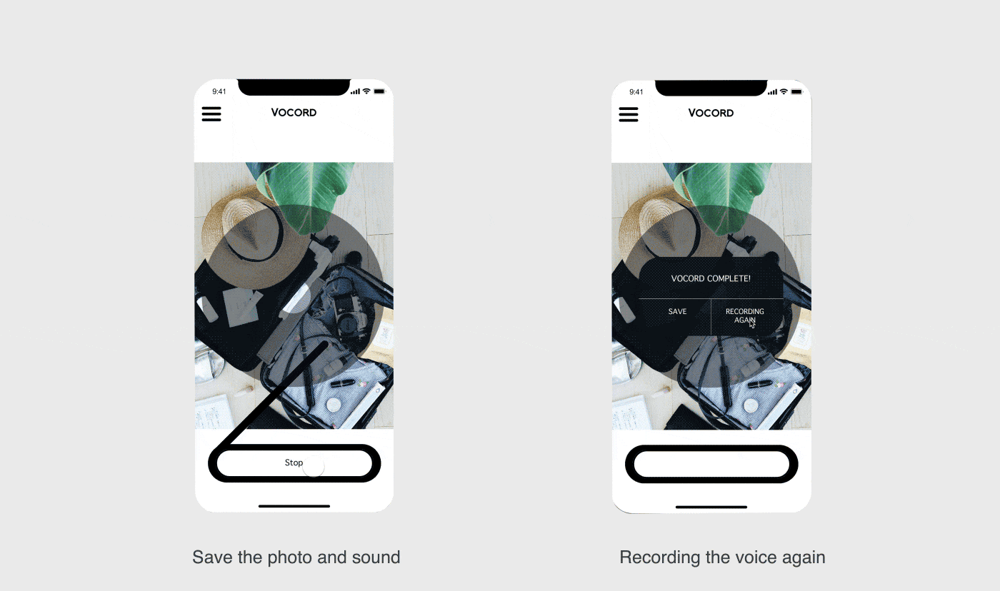
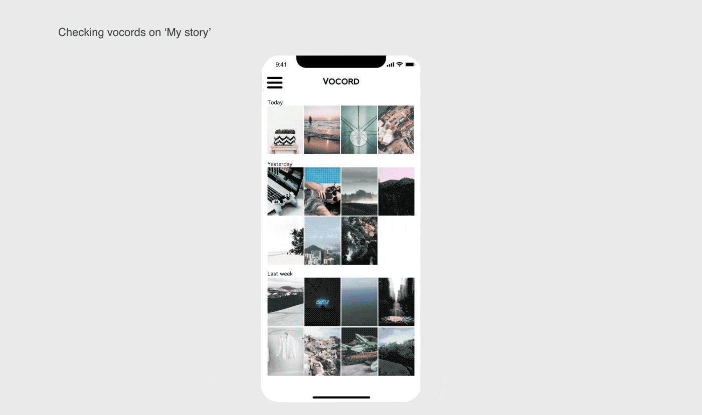
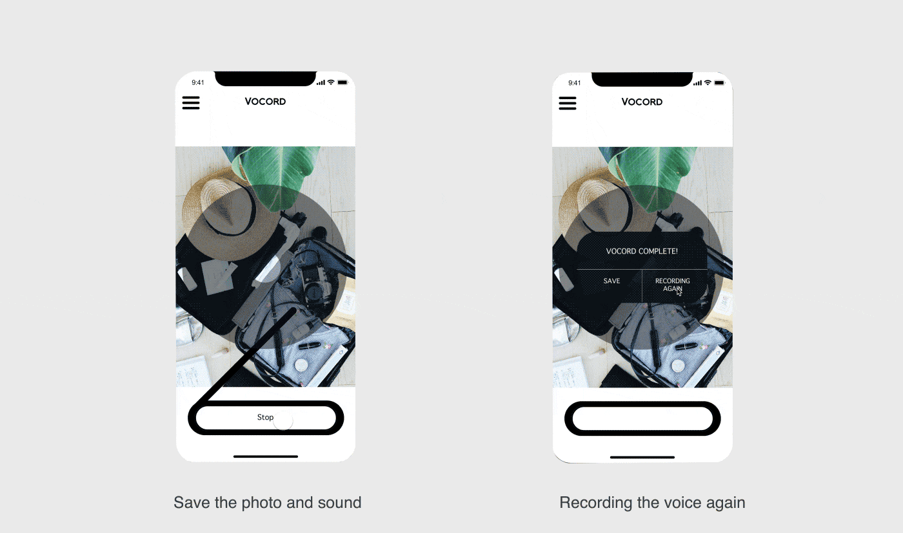
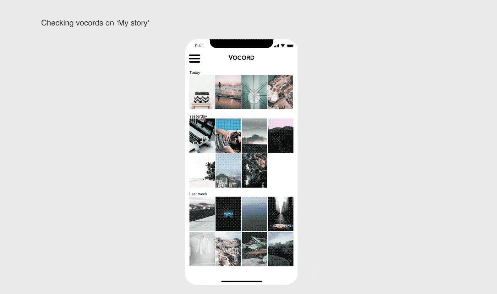

This idea was started by me and my friends while we were traveling. Travelers are busy to tour new cultures and environments. But sometimes travelers want to write a note to describe how the moment was. Travelers already spend a lot of time for taking photos. If they type the note, travelers need to ‘see’ the screen instead of seeing the scenery. However, with voice recording, travelers can see the wonderful scenery while they recording the moment.
IDEA START
Do you have a picture taken
when you traveled last year?
Can you vividly remember the moment?
Users
Traveler, Writer, Dreamer, people who want to record their special moments.
Sometimes I want to note my thoughts on a photo. But typing takes time. And I need to ‘see’ the type board while I am typing.
FINDING A PROBLEM
GOAL
Easy to make a vivid sound note while you are focused on your life. I wish they can focus on their trip while recording the vivid sound note such as an exciting voice, train sound, wind sound, friend’s laughing sound.
Combining camera with voice recording function
TOOLS
Sketch, invision, after effect
SOLUTION
Why not video?
1. if travelers record a video, they should spend time while they record the video. Then, travelers will see wonderful scenery through their screen. However, by voice recording, travelers can see wonderful moment while they record the moment vividly.
2. Photo editing is easier than the video. By taking photos, people can easily edit and upload the photo on the social networking service to share the moment with friends.
User Persona
I am a writer and a traveler. I love to experience cultures in different countries. All the moments in the trip are so precious. I share my writings and photo through SNS with people. I want to deliver my vivid experience to the reader. I used to take pictures with the camera. But I just take pictures with my phone these days. Because the camera is heavier and takes time to share the photo in SNS. I want to enjoy the scenery out of the screen. Therefore, I take many pictures with my phone. Sometimes, there are too many same pictures so I send a lot of time to delete similar pictures. And I need to organize my photo as soon as possible. Otherwise, I forget where is it and why I took the photo. Also, when I need to write a caption, I don’t know what to write because time already passed and I don’t know how to write the best caption for my photos.
- Too many photos with no description make user confuse
- As time pass, the user can’t remember the moment clear
Age …… 27
Job…… Traveler, writer
Location …… New York
Wireframe
Power of the sound
Among the five senses which refer to the five traditionally recognized methods of perception: taste, sight, touch, smell, and sound, the sight affect people a lot. Most of the media platforms are photos, videos, and texts. I rarely had recorded the voice with a smartphone before. I was familiar with media platforms such as photo, video, and text which are visible. However, after I used voice message with Wechat with my friend, I find out precious moment of voice recording.
Benefits of Voice recording
1. People can capture the moment with the voice.
2. Voice recording delivers emotions and feelings which text or photo can't
3. While recording the voice, surrounding sound such as traffic sound, friend's laughing sound, music sound also can be saved.
4. People don't need to see the screen to record.
5. People can create contents very fast. I try to apply the benefits of voice recording for travelers.
From my experience
I went to travel with friends. Of course, we took photos a lot during travel. We all had Instagram and everyone uploaded the photos they like.
However, none of us uploaded the photos right after we took it. After our tight schedule of the day or before going to bed, we started to pick the best photo and did photoshop. After editing the photo, we finally shared the exciting moment through Instagram. However, some of the photos, I couldn't remember why I took photos of that moment. Next day, I was trying to write a note for the photo. But it took times and I kept focusing on typing instead of seeing the view. At this point, my idea was started and I developed it.
JOURNEY OF THE IDEA
UI designs

 

- leave caption with a precious moment of photos
- Less time consuming, and vivid way to leave memo